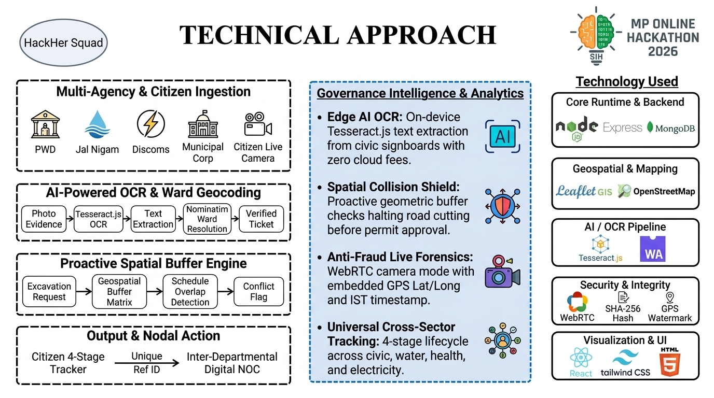

Unified Nodal Interface for Tactical Infrastructure Yield & Governance
An AI-powered inter-departmental infrastructure coordination platform and citizen-centric governance portal preventing redundant road excavation and authenticating public grievances for Madhya Pradesh.
| Operational Dimension | Legacy Administrative Approach | Project UNITY Unified Engine |
|---|---|---|
| Project Visibility | Paper files or isolated intra-departmental portals. | Shared multi-agency GIS map with coordinate overlays. |
| Conflict Detection | Reactive: discovered only after road is dug up. | Proactive: automated buffer algorithm flags permits before approval. |
| Public Grievances | Manual ticket triaging, no image text verification. | Tesseract.js OCR extracts signage/billboards on client device. |
| Image Authenticity | Unverified gallery uploads vulnerable to internet downloads. | Live camera mode with embedded Lat/Lng and IST timestamp. |

When Agency A (e.g., MP Jal Nigam) registers an excavation project, the geospatial engine calculates a geometric buffer around the route. If Agency B (e.g., PWD) has a scheduled road-surfacing project overlapping in that zone within a concurrent timeline window, an automatic Inter-Departmental Conflict Block is triggered, requiring joint sign-off before digging authorization.
Instead of routing citizen photos to expensive third-party Cloud Vision APIs (which charge per query and pose data sovereignty concerns), UNITY embeds Tesseract.js directly on the edge. This provides free, instant, and privacy-preserving text extraction for municipal evidence.
Eliminates internet-downloaded or fabricated grievance submissions by enforcing HTML5 WebRTC live camera streams with device GPS overlays and timestamps, preventing stale or forged complaints from polluting government queues.
Shifts the entire paradigm from reactive repair to proactive prevention. Civil departments are prevented from damaging newly paved corridors by enforcing mandatory synchronized utility digging windows.
A single, standardized 4-stage tracking engine (Filed → Assigned → Under Review → Resolved) serving public health, agriculture, urban works, electricity, and rural development under one nodal framework.
By preventing unscheduled road re-excavation, UNITY directly preserves municipal capital assets. Road lifespans are maintained, utility pipeline bursts from accidental digging are avoided, and administrative overheads for damage litigation between departments are eliminated.
In alignment with the Viksit Bharat 2047 vision for smart, citizen-centric digital governance, UNITY democratizes access to public digital infrastructure. Citizens experience transparent, accountable resolution with real-time tracking, fostering mutual trust between residents and the government of Madhya Pradesh.
Solves the tangible, daily administrative crisis of uncoordinated municipal digging and unverified civic tickets.
Dual-engine G2G + G2C architecture powered by Leaflet GIS spatial buffering and full RESTful integration.
Zero-cloud-cost on-device Tesseract.js OCR and live camera anti-fraud evidence protection.
Live cloud prototype with passing automated tests, ready for immediate pilot across Madhya Pradesh.